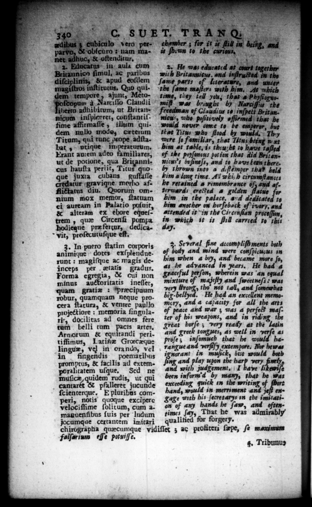

340 C. SUET. T RANG : _ edibus 1 vero per- chamber ; for it 16 flilt in being, Sk. paryo, & obicuro : nam ma- i ſb:wn to the curious, f net adhuc, & oſtenditur. r fo . Educatns in aula cum 2. He wee cone Britannico fimul, ac paribus with fe was duc — e diſciplinis, & apud eoſlem ſame parts of luerature, and under magiſtros inſtitutus. Quo qui- the ſame maſters with him, At hich dem tempore, ajunt, Meto- time, they tell you; that's Phyſtogusfcopum à Narciſſo Claudii mi was brought by ; Narciffis the Jiberro: adhibitum, ut Brita» © Freedman of Claud & — — final ihe bo dem nullo mode, cxtemm that Titus who flood by weadd. "Thy Titum, qui runc uope adſta- were ſo familiar, that Titus Seng n bat , utique imperaturum. bim at Ja fs theu;hs 70 how 1405 Erant autem adeo familiares, of the poyſancus potion that did Britanut de potione, qua Briganni- micws's brfoneſs, and to has lenm there. cus hauſta periit, 3 by thrown into a diflemper thi? beld ue juxta cubans guſtaſſe tim a long time. A! which cireumftancis credatur gravique morbo af- he retained a remembrance of, aud 7 flixtatus diu. Quorum om- Yferwards erected a golden ate nium mox memor, ſtatuam him in the „ 2 he J ei auream in Palatio puſuit, him another on horſeback of ivory, and & alteram ex ebore equeſ= attended it in the Circenſian Fa, 4 to this trem , que Circenſi pom in- avich- it +. 6:4 hodieque pre fertur, A ds ich is fill carn vit, proſecutuſqque eff, * | In puero ſtatim corporis 3. Several fine accompliſh ments both action tt Got exſplendne. ef body and mind were conſpicugus in runt : magiſque ac magis de- him when a boy, and became more ſo, inceps per etatis gradus, #5 he advanced in years, He had 4 Forma egregia, & cui non aceful perſon, wherein was an equal minus auctoritatis ineſlet, mixture of majeſty and ſeetneſi was quam gratiz : præcipuum very ltrong, tho not tall, and ſomewhat robur, quamquam neque pro- big-bellyed. He had an excellent memocera ſtatura, & ventre paullo e, and a capacity for all the arts projectiore ; memoria ſingula- of peace and war ; was 4 perfett 2 Þ ri*, docilitas ad omnes fere ter of his weapons, and in riding t tum belli tum pacis artes. great borſe; very ready at the latin Arnorum & equitandi peri- aud greek tongues, as well in verſe as tiffimus, Latif Grœcæque Proſe; inſomuch that he would halinguz, vel in orando, vel rangue and verſeſy extempore, Nor hema in fingendis poematibus nt in muſick, but would both promprus, & facilis ad extem- Hg and pray upon mehr very finely poralicatem uſque. Sed ne and with judgement, I have li ewiſe muſicæ 8 rudis, ut qui been inform'd by many, that be was Cantar pſalleret jucunde exceeding quick in the writing of © ſcienterque, E pluribus com- band, 179 ” merri ment roy jeſt en · ri, notis quoque excipere Cage with his Jecretarys im the imitattTelociflime olitum, * on of any hands he ſaw, and oftenmaguenſibus ſuis per ludum times ſay, That he was al jocumque cextantem imitari qualitied for forgery. | chirographa quæcumque vidiſſet ; ac profiterz ſæpe, ſe maximum falſarium eſſe potuiſſe, 8 ; 4. Tribunus
